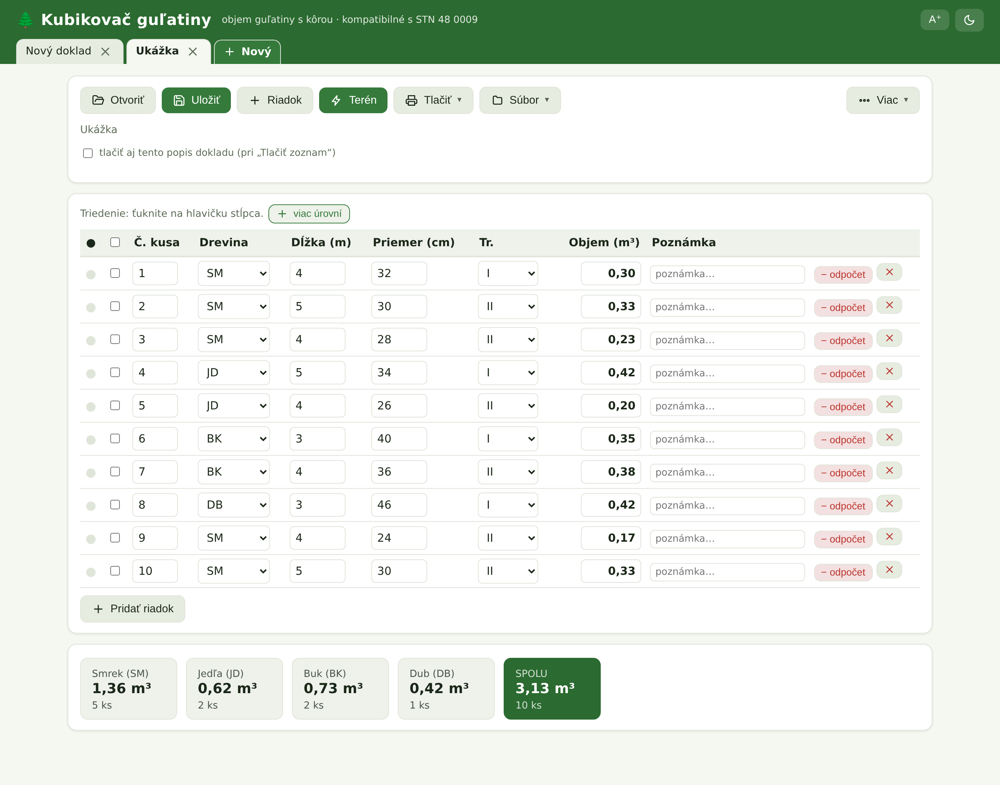

Kubikovač spočíta objem guľatiny s kôrou, pripraví doklad o pôvode dreva LA 43,
odpočty aj cenu. Beží v kancelárii aj v lese na mobile — a úplne bez internetu.
7 krokov pracovného postupu21 funkcií v prehľadekompatibilné s STN 48 0009
↓
▶ 65-sekundová ukážka: zadanie kusov → odpočet hniloby → terén → tlač dokladu LA 43 → výber kusov na odvoz a rýchly doklad → tmavý režim
1Krok 1 · Zadávanie
Zadáš kusy, objem sa počíta sám
Do prehľadnej tabuľky zapíšeš drevinu, dĺžku a priemer. Objem každého kusa
aj súčty program dopočíta okamžite — s kôrou, kompatibilne s STN 48 0009.
Ľubovoľná dĺžka — od tenkej guľatiny po mohutné kmene, počíta vlastný algoritmus
Automatické číslovanie kusov, nový riadok si pamätá drevinu
💡 Tip: Kvalitatívnu triedu (I, II, III.A–D) vyberieš rovno pri kuse — program z nej neskôr spočíta cenu.

2Krok 2 · V lese
Terénny režim na mobile — offline
V lese prepneš na terénny režim: veľké polia, zadáš dĺžku a priemer,
ťukneš + a kus je zapísaný. Signál netreba — všetko beží v telefóne.
Veľké dotykové tlačidlá — do rukavíc aj na ostrom slnku
Bežiaci súčet kusov a objemu, potvrdenie posledného kusa
Voliteľné polia navyše: číslo kusa, trieda, poznámka
💡 Tip: Enter na klávesnici pridá kus a skočí na ďalší — dávkové zadávanie bez ťukania.
3Krok 3 · Odpočty
Hniloba a odrezky — hrubý aj čistý objem
Ku kusu pridáš odpočet (hnilobu, odrezok) a program ukáže hrubý objem,
odpočet aj čistý objem — presne to, čo sa platí. Všetko ostáva zdokladované.
Ľubovoľný počet odpočtov na kus, s poznámkou
Odpočet z rozmerov alebo ručne zadaným objemom
Kontrola preklepov — záporný či prehnaný odpočet program zachytí
4Krok 4 · Doklad
Úradný doklad LA 43 na jeden klik
Vyplníš hlavičku a program vytlačí alebo uloží do PDF Doklad o pôvode
dreva LA 43 — na šírku aj na výšku. Vieš vytlačiť aj samostatný doklad pre každú drevinu.
Tlač na papier alebo PDF — na šírku aj na výšku (3 stĺpce)
Samostatný LA 43 pre jednotlivú drevinu jedným prepínačom
Rýchly doklad pre naloženú drevinu — označíš kusy a vytlačíš len tie
Jeden doklad, dve rozloženia — na šírku aj na výšku
5Krok 5 · Cena
Cenník podľa triedy — podklad k faktúre
Zadáš ceny €/m³ pre drevinu aj kvalitatívnu triedu (I, II, III.A–D).
Program vyberie správnu sadzbu pre každý kus a spočíta cenu celého dokladu.
Základná cena na drevinu + ceny podľa tried
Cena za doklad aj súhrnná štatistika naprieč dokladmi
Export do CSV v slovenskom formáte — rovno do Excelu
Palivové drevo: prevod m³ ↔ priestorový meter rovnaný (PRMR) a sypaný (PRMS) s cenou za zvolenú jednotku a celkovou sumou
💡 Tip: Koeficienty prevodu (1 PRMR / 1 PRMS v m³) si upravíš v Nastaveniach podľa dohody s odberateľom.
6Krok 6 · Prídavok 1 %
Voliteľný prídavok na dĺžku 1 %
Meriaš celé kusy aj s prídavkom? Program z nameranej dĺžky určí menovitú
(nameraná ÷ 1,01 — napr. 4,04 m → 4,00 m) a z nej počíta objem.
Dva režimy: najviac 10 cm na výrez, alebo 1 % z celej dĺžky
Súhrn vždy ukáže, ktorý režim je aktívny — žiadne prekvapenia
Skrátenie dĺžok o ľubovoľnú hodnotu — pre celý doklad či výber
Žlté upozornenie v súhrne — hneď vidno, že prídavok je zapnutý
7Krok 7 · Archív
Doklady v záložkách, archív a štatistiky
Pracuješ na viacerých dokladoch naraz v záložkách. Uložené doklady nájdeš
v archíve s vyhľadávaním a štatistikou naprieč zákazkami.
Viac otvorených dokladov, spojenie viacerých do jedného
Triedenie na viac úrovní, výber kusov na samostatný doklad
Automatické zálohy a obnova — o doklady neprídeš
💡 Tip: Rozpracovaný doklad sa priebežne ukladá sám — aj po zavretí okna pokračuješ tam, kde si skončil.
Krátke ukážky funkcií
Každá do 15 sekúnd — ťukni na prehratie.
1Cenník podľa triedyZadáš ceny €/m³ pre kvalitatívne triedy a program hneď prepočíta cenu celého dokladu — hotový podklad k faktúre.2Prídavok na dĺžku 1 %Zapneš prídavok, vyberieš režim (najviac 10 cm alebo z celej dĺžky) — súhrn ukáže upozornenie a objemy sa prepočítajú z menovitej dĺžky.3Viacúrovňové triedenieZapneš „viac úrovní", ťukneš na Drevinu a potom na Objem — kusy sa zoskupia podľa drevín a v rámci nich zoradia podľa objemu.4Skrátenie dĺžokZadáš o koľko skrátiť, pozrieš náhľad pred/po a jedným tlačidlom upravíš celý doklad — každý kus dostane poznámku.5Menu a prehľadyTlač a export v menu, prehľad Dreviny a tabuľky, štatistika kusov, objemu a ceny naprieč všetkými dokladmi.
Všetko, čo v programe nájdeš
Kompletný prehľad funkcií — od výpočtu cez doklady až po štatistiky.
Kompatibilné s STN 48 0009Objem guľatiny meranej s kôrou pre všetky bežné dreviny.
Terénny režimVeľké polia, bežiaci súčet — rýchle zadávanie v lese.
Úradný doklad LA 43Tlač aj PDF, na šírku aj na výšku, na jeden klik.
Rýchly doklad pre naloženú drevinuOznačíš kusy na aute a vytlačíš doklad len pre ne.
Samostatný doklad pre každú drevinuJedným prepínačom rozdelí LA 43 podľa drevín.
Skrátenie dĺžokSkráti všetky či vybrané kusy o zadanú hodnotu s náhľadom.
Odpočty hniloby a odrezkovHrubý aj čistý objem po odpočte — všetko zdokladované.
Prídavok na dĺžku 1 %Menovitá dĺžka z nameranej (÷ 1,01), max 10 cm alebo bez limitu.
Cenník podľa triedyCeny €/m³ na drevinu aj triedu I–III.D, cena dokladu.
Prevod na priestorové metrePalivové drevo: m³ ↔ PRMR/PRMS s cenou a celkovou sumou; koeficienty podľa dohody.
Súčty a štatistikyPo drevinách aj celkovo, naprieč všetkými zákazkami.
Triedenie a výber na viac úrovníPodľa dreviny, dĺžky, priemeru, objemu — aj kombinovane.
Spojenie viacerých dokladovViac uložených dokladov spojíš do jedného.
Záložky a archívViac dokladov naraz, archív s vyhľadávaním a zálohami.
Tmavý režim a veľké písmoČitateľné na slnku aj pre slabší zrak — jedným tlačidlom.
Windows · Android · LinuxTen istý program všade, offline, doklady prenositeľné.
Export a import JSON / CSVDoklad uložíš do súboru a kedykoľvek načítaš späť; CSV otvoríš rovno v Exceli.
Pracovný zoznam na tlačOkrem LA 43 vytlačíš aj jednoduchý zoznam kusov — na sklad či do výroby.
Terén na mieruV teréne si zapneš len polia, ktoré potrebuješ — číslo kusa, triedu, poznámku.
Prenos z mobilu na počítačDoklad z terénu uložíš do súboru a na PC ho otvoríš — bez prepisovania.
Automatické zálohyDatabáza sa priebežne zálohuje a pri poškodení sa sama obnoví z poslednej zálohy.
Ohlási novú verziuProgram pri štarte zistí novšiu verziu a ponúkne stiahnutie — dáta ostanú zachované.
Ako začať — tri kroky
1Objednáš a nainštaluješ
Stiahneš inštalátor pre Windows, Android alebo Linux a nainštaluješ ako bežný program.
2Aktivuješ licenciu
Program ukáže kód zariadenia — pošleš ho a obratom dostaneš licenčný súbor. Nahráš, hotovo.
3Kubíkuješ
Zadávaš kusy, tlačíš doklady, počítaš ceny. Všetko offline, dáta ostávajú len u teba.
Skúšobná verzia zdarmaPožiadajte o dočasnú licenciu a vyskúšajte program bez záväzkov.
Funkcie na požiadanieDoprogramujeme funkcionalitu podľa vašich potrieb.
Pomoc s inštaláciouNa diaľku, po dohode aj osobné stretnutie a inštalácia u vás.
Vyskúšaj Kubikovač ešte dnes
Windows, Android aj Linux. Doklady sú uložené len u teba — offline, bez cloudu.
Výpočet objemu guľatiny meranej s kôrou, kompatibilný s normou STN 48 0009.
 Kubikovač guľatiny
Kubikovač guľatiny